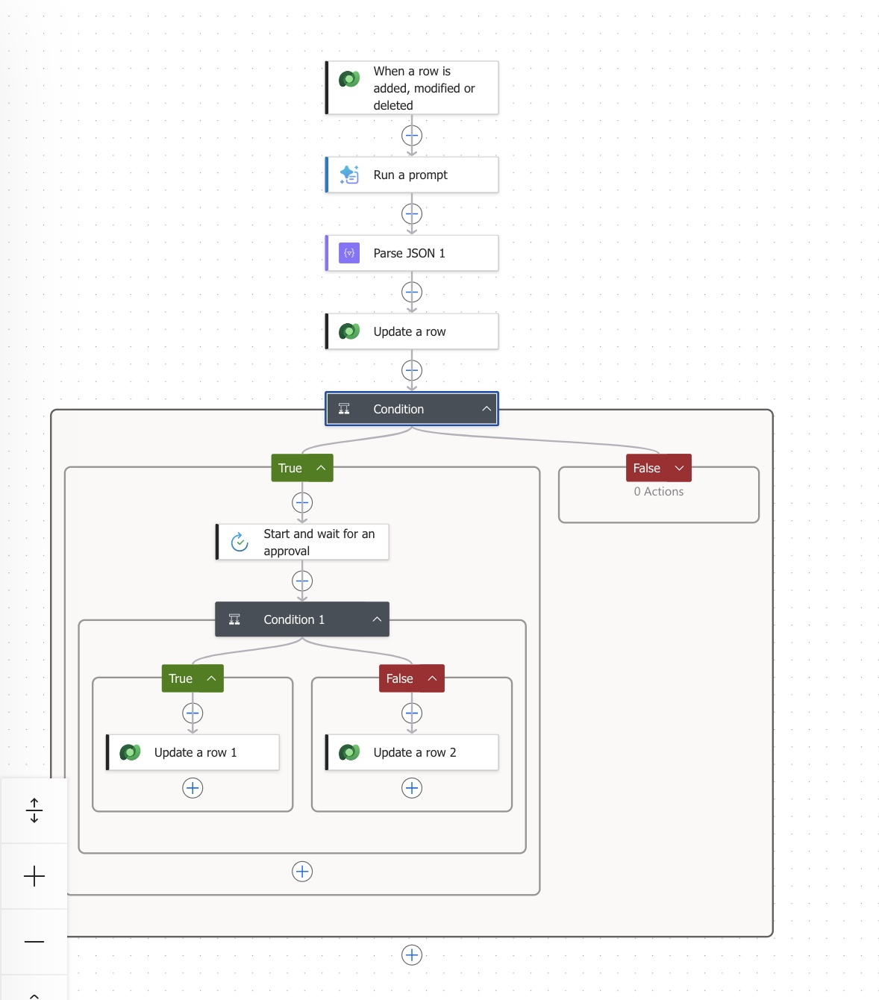
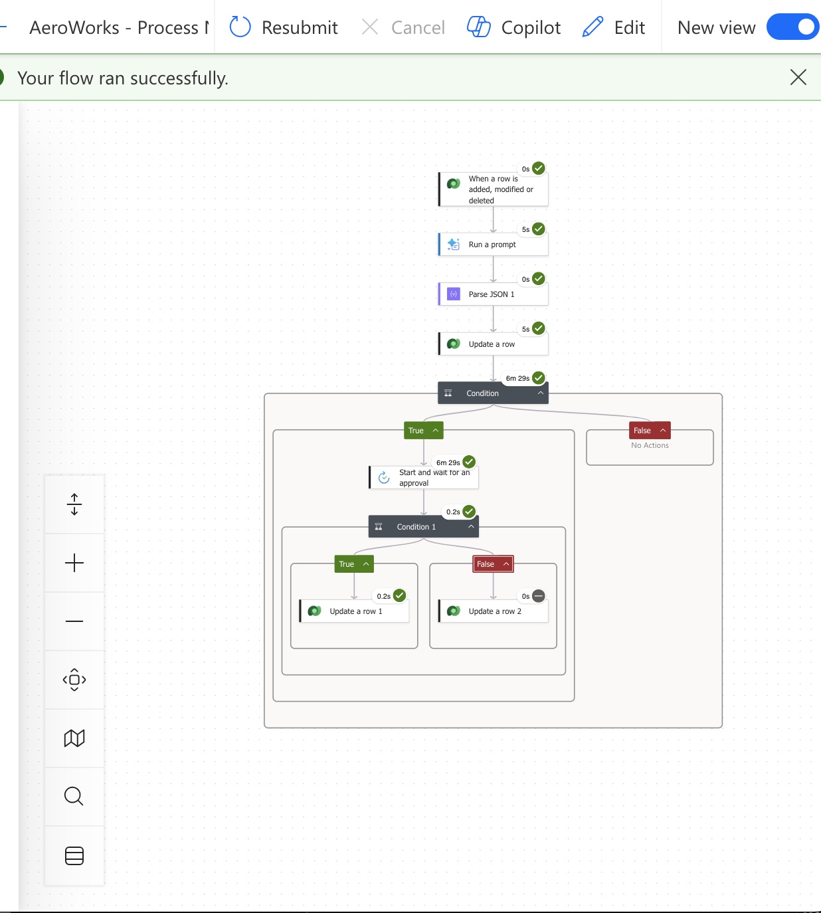
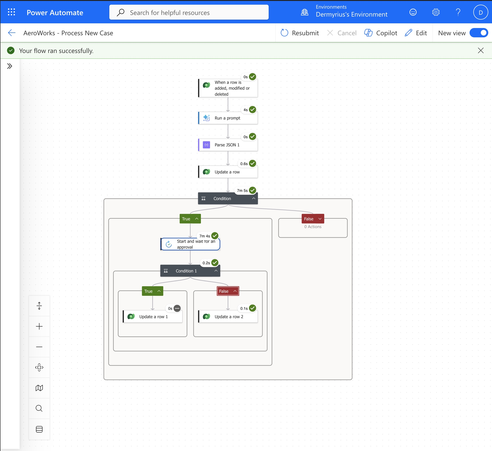
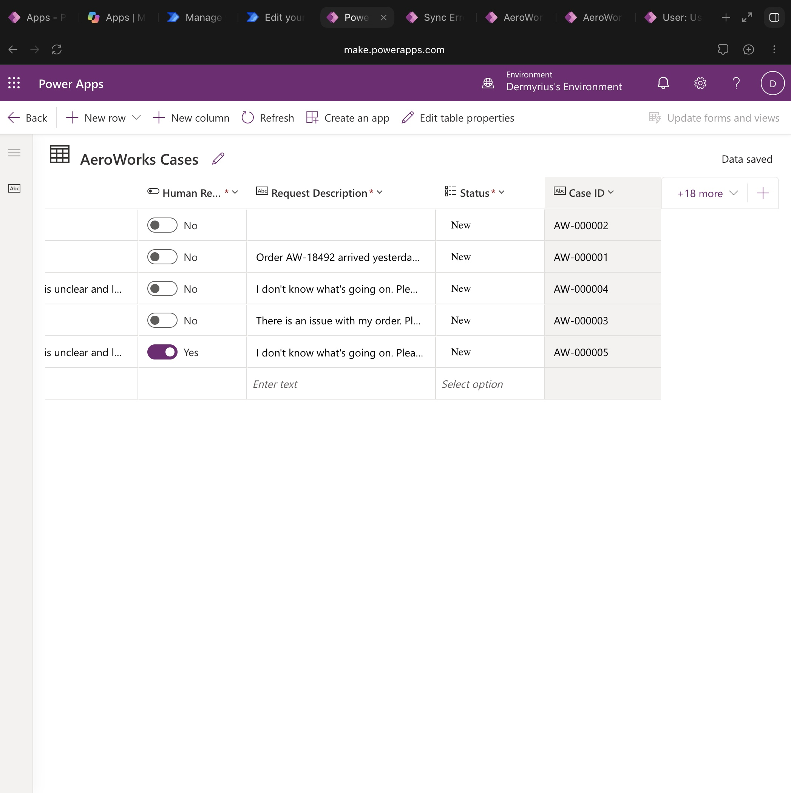

Power Platform case study · 2026
AeroWorks Case Triage
An AI-assisted intake flow that turns new customer requests into structured case data, then asks a person to decide when the request needs review.
The challenge
Unclear service requests can be difficult to route consistently. The workflow needed to capture each case, extract useful triage details, and flag uncertain requests for a human decision without allowing AI to make the final call.
The approach
- A new row in the AeroWorks Cases Dataverse table starts the flow.
- An AI prompt summarizes and classifies the request and returns structured fields.
- Parse JSON makes the response available to update the case record.
- Cases marked for human review receive an approval request.
- An approval clears the review flag; a rejection keeps it set for follow-up.

Validation
Two unclear-request examples were run through the workflow. Both flow runs succeeded, and each approval path updated the intended Dataverse field.



What I learned
End-to-end testing surfaced how important exact Dataverse field types and approval outcomes are to reliable automation. Checking the saved records after each run confirmed the full path, from AI analysis through the human decision, rather than relying on a successful flow status alone.
Scope note
This is a portfolio demonstration in a personal Power Platform environment, not a production AeroWorks deployment. AI output is advisory, and a human makes the final approval decision. Rejected cases are flagged for follow-up; their Status field is not changed.
Back to selected work